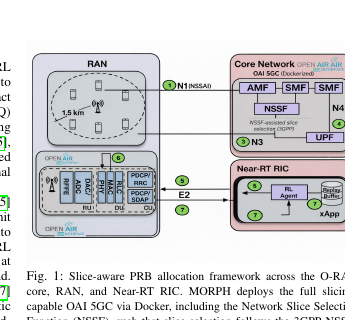
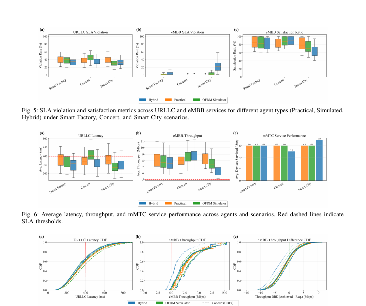

MORPH:
learn PRB handling across environments.
A slice-priority demonstration that combines OAI measurements, empirical MCS behavior, and a PHY-fidelity simulator so the same policy can be tested across practical, simulated, and hybrid environments.
Replay one network under three priorities.
Switch between Smart Factory, Stadium, and Smart City demand profiles, then compare practical, simulated, and hybrid agents on SLA, latency, throughput, and connected devices.
What the demo shows
The hybrid agent achieves the lowest average URLLC latency, stays below the reported 400 ms SLA threshold, and reduces SLA violations, with a tradeoff in eMBB throughput.
The hybrid agent reaches the highest average eMBB throughput with near-zero SLA violations and the highest satisfaction in the reported scenario.
The hybrid agent supports the largest number of connected IoT devices by prioritizing connectivity while limiting the effect on URLLC and eMBB performance.


Figures are cropped from the submitted paper to show the system and the most relevant reported results.
Back to demos ↗